概述 Spring Cloud Alibaba 致力于提供微服务开发的一站式解决方案。此项目包含开发分布式应用微服务的必需组件，方便开发者通过 Spring Cloud 编程模型轻松使用这些组件来开发分布式应用服务。
依托 Spring Cloud Alibaba，您只需要添加一些注解和少量配置，就可以将 Spring Cloud 应用接入阿里微服务解决方案，通过阿里中间件来迅速搭建分布式应用系统。
Spring Cloud是基于SpringBoot开发的，而Spring Cloud Alibaba是基于Spring Cloud开发的，所以Spring Cloud Alibaba必须使用SpringBoot
Spring Cloud Alibaba Nacos服务 在 Spring Cloud Netflix 阶段我们采用 Eureka 做作为我们的服务注册与发现服务器，现利用 Spring Cloud Alibaba 提供的 Nacos 组件替代该方案。
Nacos 官网
下载安装 源码构建安装 Nacos 依赖 Java 环境来运行。如果您是从代码开始构建并运行Nacos，还需要为此配置 Maven 环境，请确保是在以下版本环境中安装使用:
64 bit OS，支持 Linux/Unix/Mac/Windows，推荐选用 Linux/Unix/Mac。
64 bit JDK 1.8+；下载 & 配置 。
Maven 3.2.x+；下载 & 配置 。
拉取代码
1 2 3 4 5 6 7 git clone https://github.com/alibaba/nacos.git cd nacos/mvn -Prelease-nacos -Dmaven.test.skip=true clean install -U ls -al distribution/target/ // change the $version to your actual path cd distribution/target/nacos-server-$version /nacos/bin
发行包安装 您可以从 最新稳定版本 下载 nacos-server-$version.zip 包。
1 2 unzip nacos-server-$version .zip 或者 tar -xvf nacos-server-$version .tar.gz cd nacos/bin
启动服务 Linux/Unix/Mac
启动命令(standalone代表着单机模式运行，非集群模式):
1 sh startup.sh -m standalone
如果您使用的是ubuntu系统，或者运行脚本报错提示[[符号找不到，可尝试如下运行：
1 bash startup.sh -m standalone
Windows
启动命令：
或者双击startup.cmd运行文件。
访问服务 打开浏览器访问：http://localhost:8848/nacos
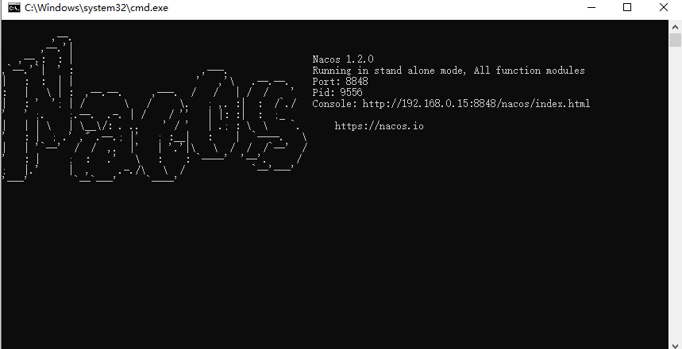
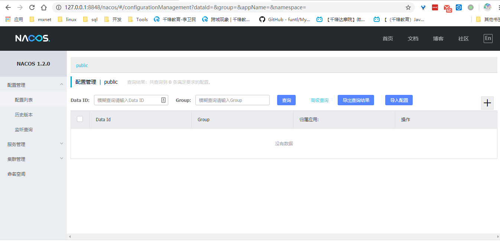
关闭服务 Linux/Unix/Mac
Windows
或者双击shutdown.cmd运行文件。
统一依赖管理 Spring Cloud Alibaba 项目都是基于 Spring Cloud，而 Spring Cloud 项目又是基于 Spring Boot 进行开发，并且都是使用 Maven 做项目管理工具。在实际开发中，我们一般都会创建一个依赖管理项目作为 Maven 的 Parent 项目使用，这样做可以极大的方便我们对 Jar 包版本的统一管理。
pom文件 创建spirng-cloud-alibaba-demo项目
1 2 3 4 5 6 7 8 9 10 11 12 13 14 15 16 17 18 19 20 21 22 23 24 25 26 27 28 29 30 31 32 33 34 35 36 37 38 39 40 41 42 43 44 45 46 47 48 49 50 51 52 53 54 55 56 57 58 59 60 61 62 63 64 65 66 67 68 69 70 71 72 73 74 75 76 77 78 79 80 81 82 83 84 85 86 87 88 89 90 91 92 93 94 95 96 97 98 99 100 101 102 103 104 105 106 107 108 109 110 111 112 113 114 115 116 117 118 119 120 121 122 123 124 125 126 127 128 129 130 131 132 133 134 135 136 137 138 139 140 141 142 143 144 145 146 <?xml version="1.0" encoding="UTF-8"?> <project xmlns ="http://maven.apache.org/POM/4.0.0" xmlns:xsi ="http://www.w3.org/2001/XMLSchema-instance" xsi:schemaLocation ="http://maven.apache.org/POM/4.0.0 http://maven.apache.org/xsd/maven-4.0.0.xsd" > <modelVersion > 4.0.0</modelVersion > <modules > <module > spring-cloud-alibaba-provider</module > <module > spring-cloud-alibaba-consumer</module > </modules > <groupId > top.awslzhang</groupId > <artifactId > hello-spring-cloud-alibaba</artifactId > <version > 1.0.0-SNAPSHOT</version > <packaging > pom</packaging > <properties > <spring-boot.version > 2.2.5.RELEASE</spring-boot.version > <spring-cloud-openfeign.version > 2.2.0.RELEASE</spring-cloud-openfeign.version > <spring-cloud-gateway.version > 2.2.2.RELEASE</spring-cloud-gateway.version > <spring-cloud.version > Hoxton.SR3</spring-cloud.version > <junit.version > 4.12</junit.version > <javax-servlet-api > 3.0</javax-servlet-api > <slf4j-api.version > 1.7.25</slf4j-api.version > <dubbo.version > 2.7.4.1</dubbo.version > <curator.version > 4.0.1</curator.version > <rocketmq.starter.version > 2.0.2</rocketmq.starter.version > <maven-compiler-plugin.version > 3.7.0</maven-compiler-plugin.version > <maven-deploy-plugin.version > 2.8.2</maven-deploy-plugin.version > <maven-surefire-plugin.version > 2.21.0</maven-surefire-plugin.version > <gmavenplus-plugin.version > 1.6</gmavenplus-plugin.version > <jacoco.version > 0.8.3</jacoco.version > </properties > <dependencyManagement > <dependencies > <dependency > <groupId > org.springframework.boot</groupId > <artifactId > spring-boot-dependencies</artifactId > <version > ${spring-boot.version}</version > <type > pom</type > <scope > import</scope > </dependency > <dependency > <groupId > org.springframework.cloud</groupId > <artifactId > spring-cloud-openfeign-dependencies</artifactId > <version > ${spring-cloud-openfeign.version}</version > <type > pom</type > <scope > import</scope > </dependency > <dependency > <groupId > org.springframework.cloud</groupId > <artifactId > spring-cloud-dependencies</artifactId > <version > ${spring-cloud.version}</version > <type > pom</type > <scope > import</scope > </dependency > <dependency > <groupId > com.alibaba.cloud</groupId > <artifactId > spring-cloud-alibaba-dependencies</artifactId > <version > 2.2.0.RELEASE</version > <type > pom</type > <scope > import</scope > </dependency > </dependencies > </dependencyManagement > <build > <plugins > <plugin > <groupId > io.spring.javaformat</groupId > <artifactId > spring-javaformat-maven-plugin</artifactId > </plugin > <plugin > <groupId > org.apache.maven.plugins</groupId > <artifactId > maven-checkstyle-plugin</artifactId > <executions > <execution > <id > checkstyle-validation</id > <phase > validate</phase > <goals > <goal > check</goal > </goals > <configuration > <suppressionsLocation > eclipse/checkstyle-suppressions.xml </suppressionsLocation > <includeTestSourceDirectory > true</includeTestSourceDirectory > <consoleOutput > true</consoleOutput > <failsOnError > true</failsOnError > <failOnViolation > true</failOnViolation > <violationSeverity > warning</violationSeverity > </configuration > </execution > </executions > </plugin > <plugin > <groupId > org.apache.maven.plugins</groupId > <artifactId > maven-compiler-plugin</artifactId > <version > ${maven-compiler-plugin.version}</version > <inherited > true</inherited > <configuration > <source > 1.8</source > <target > 1.8</target > <parameters > true</parameters > </configuration > </plugin > <plugin > <groupId > org.apache.maven.plugins</groupId > <artifactId > maven-surefire-plugin</artifactId > <version > ${maven-surefire-plugin.version}</version > <inherited > true</inherited > <configuration > <forkCount > 1</forkCount > <reuseForks > false</reuseForks > </configuration > </plugin > </plugins > <resources > <resource > <directory > src/main/java</directory > <excludes > <exclude > **/*.java</exclude > </excludes > </resource > <resource > <directory > src/main/resources</directory > </resource > </resources > </build > </project >
package：pom，表示该项目仅当做依赖项目，没有具体的实现代码
服务提供者 通过一个简单的示例来感受一下如何将服务注册到 Nacos，其实和 Eureka 没有太大差别。
创建spring-cloud-alibaba-provider项目，此项目是依赖管理的子模块
pom文件 1 2 3 4 5 6 7 8 9 10 11 12 13 14 15 16 17 18 19 20 21 22 23 24 25 26 27 28 29 30 31 32 33 34 35 36 37 38 39 40 41 42 43 44 45 46 47 <?xml version="1.0" encoding="UTF-8"?> <project xmlns ="http://maven.apache.org/POM/4.0.0" xmlns:xsi ="http://www.w3.org/2001/XMLSchema-instance" xsi:schemaLocation ="http://maven.apache.org/POM/4.0.0 http://maven.apache.org/xsd/maven-4.0.0.xsd" > <parent > <artifactId > hello-spring-cloud-alibaba</artifactId > <groupId > top.awslzhang</groupId > <version > 1.0.0-SNAPSHOT</version > </parent > <modelVersion > 4.0.0</modelVersion > <artifactId > spring-cloud-alibaba-provider</artifactId > <dependencies > <dependency > <groupId > org.springframework.boot</groupId > <artifactId > spring-boot-starter-web</artifactId > </dependency > <dependency > <groupId > org.springframework.boot</groupId > <artifactId > spring-boot-starter-actuator</artifactId > </dependency > <dependency > <groupId > com.alibaba.cloud</groupId > <artifactId > spring-cloud-starter-alibaba-nacos-discovery</artifactId > </dependency > <dependency > <groupId > org.springframework.boot</groupId > <artifactId > spring-boot-starter-test</artifactId > <scope > test</scope > </dependency > </dependencies > <build > <plugins > <plugin > <groupId > org.springframework.boot</groupId > <artifactId > spring-boot-maven-plugin</artifactId > <configuration > <mainClass > top.awslzhang.provider.SpringCloudAlibabaProviderApplication</mainClass > </configuration > </plugin > </plugins > </build > </project >
application.yml 1 2 3 4 5 6 7 8 9 10 11 12 13 14 15 16 17 18 19 spring: application: name: nacos-provider cloud: nacos: discovery: server-addr: 127.0 .0 .1 :8848 server: port: 9091 management: endpoints: web: exposure: include: "*"
Application.java 1 2 3 4 5 6 7 8 9 @SpringBootApplication @EnableDiscoveryClient public class SpringCloudAlibabaProviderApplication public static void main (String[] args) SpringApplication.run(SpringCloudAlibabaProviderApplication.class, args); } }
control 新建一个controller测试用
1 2 3 4 5 6 7 8 9 10 11 12 @RestController public class NacosController @Value("${server.port}") private String port; @GetMapping("provider/sout/{content}") public String sout (@PathVariable(value = "content") String sout) return String.format("hello, %s ,this is Provider! by port %s" ,sout ,port); } }
启动工程 通过浏览器访问 http://localhost:8848/nacos，即 Nacos Server 网址
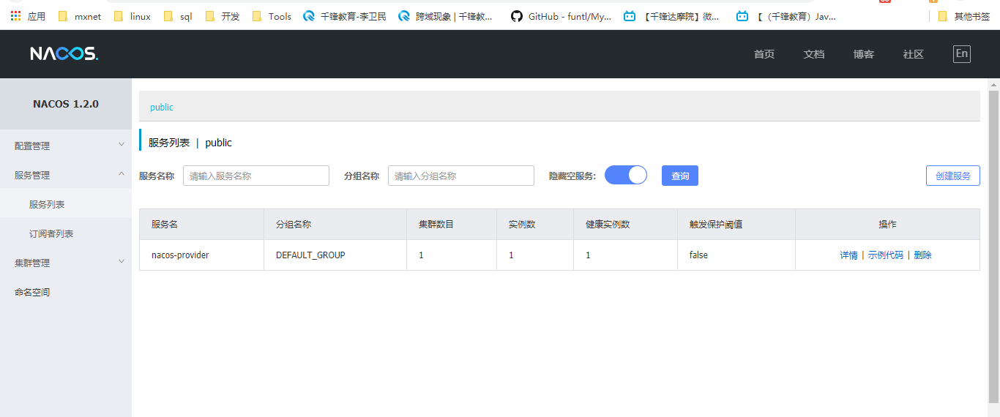
你会发现一个服务已经注册在服务中了，服务名为 nacos-provider
这时打开 http://127.0.0.1:9091/provider/sout/hello ，你会在浏览器上看到：
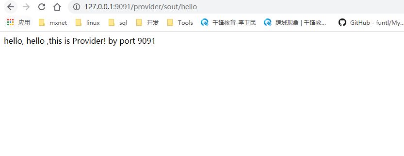
服务消费者 创建spring-cloud-alibaba-consumer项目
此时要保证提供者服务为运行状态 ，否则调用不到。
RestTemplate方式 服务消费者的创建与服务提供者大同小异，这里采用最原始的一种方式，即显示的使用 LoadBalanceClient 和 RestTemplate 结合的方式来访问。
pom文件 1 2 3 4 5 6 7 8 9 10 11 12 13 14 15 16 17 18 19 20 21 22 23 24 25 26 27 28 29 30 31 32 33 34 35 36 37 38 39 <?xml version="1.0" encoding="UTF-8"?> <project xmlns ="http://maven.apache.org/POM/4.0.0" xmlns:xsi ="http://www.w3.org/2001/XMLSchema-instance" xsi:schemaLocation ="http://maven.apache.org/POM/4.0.0 http://maven.apache.org/xsd/maven-4.0.0.xsd" > <parent > <artifactId > hello-spring-cloud-alibaba</artifactId > <groupId > top.awslzhang</groupId > <version > 1.0.0-SNAPSHOT</version > </parent > <modelVersion > 4.0.0</modelVersion > <artifactId > spring-cloud-alibaba-consumer</artifactId > <dependencies > <dependency > <groupId > org.springframework.boot</groupId > <artifactId > spring-boot-starter-web</artifactId > </dependency > <dependency > <groupId > org.springframework.boot</groupId > <artifactId > spring-boot-starter-actuator</artifactId > </dependency > <dependency > <groupId > com.alibaba.cloud</groupId > <artifactId > spring-cloud-starter-alibaba-nacos-discovery</artifactId > </dependency > <dependency > <groupId > org.springframework.cloud</groupId > <artifactId > spring-cloud-starter-openfeign</artifactId > </dependency > <dependency > <groupId > org.springframework.boot</groupId > <artifactId > spring-boot-starter-test</artifactId > <scope > test</scope > </dependency > </dependencies > </project >
application.yml 1 2 3 4 5 6 7 8 9 10 11 12 13 14 15 16 server: port: 9092 spring: application: name: nacos-consumer cloud: nacos: server-addr: 127.0 .0 .1 :8848 management: endpoints: web: exposure: include: "*"
Application.java 1 2 3 4 5 6 7 8 @SpringBootApplication @EnableDiscoveryClient public class SpringCloudAlibabaConsumerApplication public static void main (String[] args) SpringApplication.run(SpringCloudAlibabaConsumerApplication.class, args); } }
config 注入调用者的bean，同时设置负载均衡
1 2 3 4 5 6 7 8 9 10 11 12 13 14 15 @Configuration public class RestTemplateConfig @LoadBalanced @Bean public RestTemplate restTemplate () return new RestTemplate(); } }
control 测试
1 2 3 4 5 6 7 8 9 10 11 12 13 14 15 16 17 18 19 20 21 22 23 24 25 26 27 28 29 30 31 package top.aswlzhang.consumer.control;import org.springframework.beans.factory.annotation.Autowired;import org.springframework.web.bind.annotation.GetMapping;import org.springframework.web.bind.annotation.PathVariable;import org.springframework.web.bind.annotation.RequestMapping;import org.springframework.web.bind.annotation.RestController;import org.springframework.web.client.RestTemplate;import top.aswlzhang.consumer.service.NacosService;@RequestMapping("consumer") @RestController public class NacosController private RestTemplate restTemplate; @GetMapping("test2/{one}") public String test2 (@PathVariable(value = "one") String one) return restTemplate.getForObject("http://nacos-provider/provider/sout/" + one, String.class); } @Autowired public void setRestTemplate (RestTemplate restTemplate) this .restTemplate = restTemplate; } }
启动工程 通过浏览器访问 http://localhost:8848/nacos，即 Nacos Server 网址
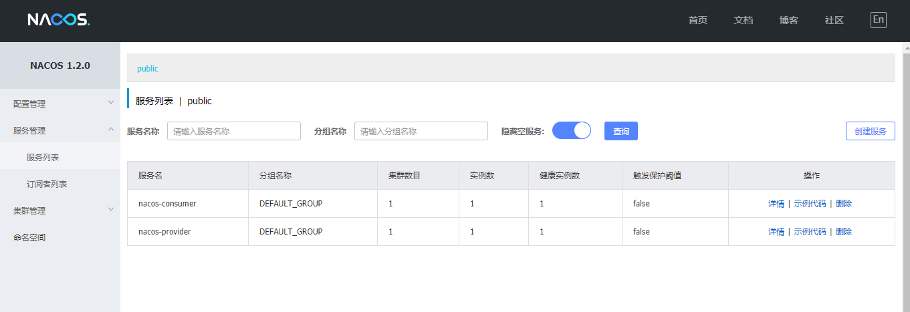
你会发现一个服务已经注册在服务中了，服务名为 nacos-consumer
这时打开 http://127.0.0.1:9092/consumer/test2/ribbon ，你会在浏览器上看到：
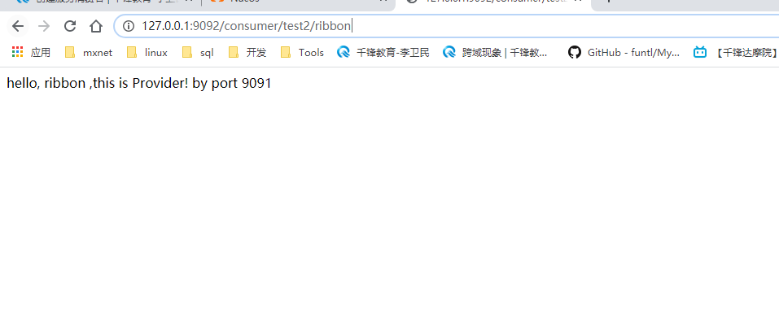
Feign方式 Feign 是一个声明式的伪 Http 客户端，它使得写 Http 客户端变得更简单。使用 Feign，只需要创建一个接口并注解。它具有可插拔的注解特性，可使用 Feign 注解和 JAX-RS 注解。Feign 支持可插拔的编码器和解码器。Feign 默认集成了 Ribbon，Nacos 也很好的兼容了 Feign，默认实现了负载均衡的效果
Feign 采用的是基于接口的注解
Feign 整合了 ribbon
pom文件 1 2 3 4 5 6 7 8 9 10 11 12 13 14 15 16 17 18 19 20 21 22 23 24 25 26 27 28 29 30 31 32 33 34 35 36 37 38 39 <?xml version="1.0" encoding="UTF-8"?> <project xmlns ="http://maven.apache.org/POM/4.0.0" xmlns:xsi ="http://www.w3.org/2001/XMLSchema-instance" xsi:schemaLocation ="http://maven.apache.org/POM/4.0.0 http://maven.apache.org/xsd/maven-4.0.0.xsd" > <parent > <artifactId > hello-spring-cloud-alibaba</artifactId > <groupId > top.awslzhang</groupId > <version > 1.0.0-SNAPSHOT</version > </parent > <modelVersion > 4.0.0</modelVersion > <artifactId > spring-cloud-alibaba-consumer</artifactId > <dependencies > <dependency > <groupId > org.springframework.boot</groupId > <artifactId > spring-boot-starter-web</artifactId > </dependency > <dependency > <groupId > org.springframework.boot</groupId > <artifactId > spring-boot-starter-actuator</artifactId > </dependency > <dependency > <groupId > com.alibaba.cloud</groupId > <artifactId > spring-cloud-starter-alibaba-nacos-discovery</artifactId > </dependency > <dependency > <groupId > org.springframework.cloud</groupId > <artifactId > spring-cloud-starter-openfeign</artifactId > </dependency > <dependency > <groupId > org.springframework.boot</groupId > <artifactId > spring-boot-starter-test</artifactId > <scope > test</scope > </dependency > </dependencies > </project >
application.yml 1 2 3 4 5 6 7 8 9 10 11 12 13 14 15 16 server: port: 9092 spring: application: name: nacos-consumer cloud: nacos: server-addr: 127.0 .0 .1 :8848 management: endpoints: web: exposure: include: "*"
Application.java 1 2 3 4 5 6 7 8 9 @SpringBootApplication @EnableDiscoveryClient @EnableFeignClients public class SpringCloudAlibabaConsumerApplication public static void main (String[] args) SpringApplication.run(SpringCloudAlibabaConsumerApplication.class, args); } }
service 1 2 3 4 5 6 7 8 9 10 11 12 13 @FeignClient(name = "nacos-provider") public interface NacosService @GetMapping("provider/sout/{content}") String sout (@PathVariable(value = "content") String sout) ; }
control 测试
1 2 3 4 5 6 7 8 9 10 11 12 13 14 15 16 @RequestMapping("consumer") @RestController public class NacosController @Autowired private NacosService nacosService; @GetMapping("test1/{one}") public String test1 (@PathVariable(value = "one") String one) return nacosService.sout(one); } }
启动工程 通过浏览器访问 http://localhost:8848/nacos，即 Nacos Server 网址
你会发现一个服务已经注册在服务中了，服务名为 nacos-consumer
这时打开 http://127.0.0.1:9092/consumer/test1/feign ，你会在浏览器上看到：
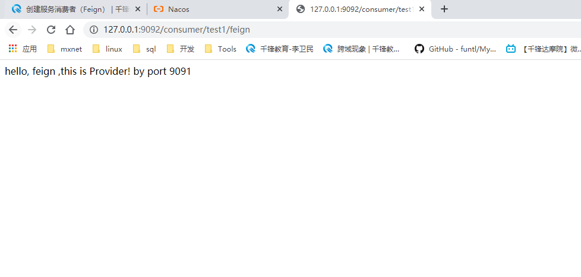
Sentinel分布式系统的流量防卫组件 本项目演示如何使用 Sentinel starter 完成 Spring Cloud 应用调用。
Sentinel 是阿里巴巴开源的分布式系统的流量防卫组件，Sentinel 把流量作为切入点，从流量控制，熔断降级，系统负载保护等多个维度保护服务的稳定性。
OpenFeign 是一款声明式、模板化的HTTP客户端， Feign可以帮助我们更快捷、优雅地调用HTTP API。
服务消费方 在启动示例进行演示之前，我们先了解一下 Feign 如何接入 Sentinel。
首先，修改 pom.xml 文件，引入 Sentinel starter 。
1 2 3 4 5 6 7 8 9 10 <dependency > <groupId > org.springframework.cloud</groupId > <artifactId > spring-cloud-starter-openfeign</artifactId > </dependency > <dependency > <groupId > com.alibaba.cloud</groupId > <artifactId > spring-cloud-starter-alibaba-sentinel</artifactId > </dependency >
其次, 使用nacos 注册中心
1 2 3 4 <dependency > <groupId > com.alibaba.cloud</groupId > <artifactId > spring-cloud-starter-alibaba-nacos-discovery</artifactId > </dependency >
定义FeignClient,及其降级配置
1 2 3 4 5 6 7 8 9 10 11 12 13 @FeignClient(name = "nacos-provider", fallback = NacosServiceFallback.class) public interface NacosService @GetMapping("provider/sout/{content}") String sout (@PathVariable(value = "content") String sout) ; }
1 2 3 4 5 6 7 8 9 @Component public class NacosServiceFallback implements NacosService @Override public String sout (String sout) return "你好，熔断服务！" ; } }
yml添加内容
1 2 3 feign: sentinel: enabled: true
服务提供方
首先， 依赖nacos 注册中心
1 2 3 4 <dependency > <groupId > com.alibaba.cloud</groupId > <artifactId > spring-cloud-starter-alibaba-nacos-discovery</artifactId > </dependency >
定义服务提供方接口
1 2 3 4 5 6 7 8 9 10 11 @RestController public class NacosController @Value("${server.port}") private String port; @GetMapping("provider/sout/{content}") public String sout (@PathVariable(value = "content") String sout) return String.format("hello, %s ,this is Provider! by port %s" ,sout ,port); } }
测试 同时启动提供者和消费者
通过浏览器访问 http://localhost:8848/nacos，即 Nacos Server 网址
关闭提供者服务
通过浏览器访问 http://127.0.0.1:9092/consumer/test1/one
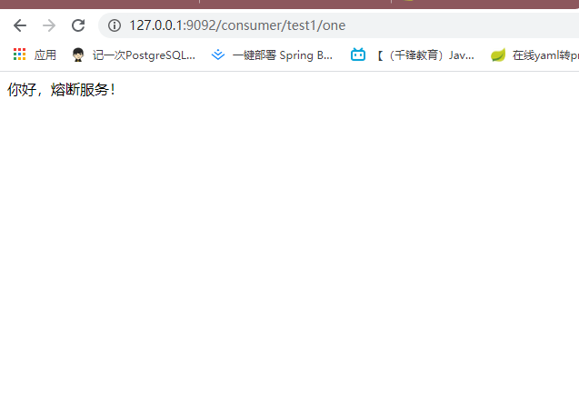
至此，成功
错误 参考GitHub
问题描述
当我在集成 Sentinel 和 Feign 时
具体问题日志如下：com.alibaba.cloud.sentinel.feign.SentinelContractHolder.parseAndValidateMetadata(Ljava/lang/Class;)Ljava/util/List ;
所用版本：
Spring Cloud Version：Hoxton.SR3
解决方案
By reproducing it, I found two ways to solve this:
Change Spring Cloud Version from Hoxton.SR3 to Hoxton.RELEASE
Remain using Hoxton.SR3, and specified the version of spring-cloud-openfeign-dependencies to 2.2.0.RELEASE.
1 2 3 4 5 6 7 8 9 10 11 12 13 14 15 16 17 18 19 20 21 22 23 24 25 26 27 <dependencyManagement> <dependencies> <dependency> <groupId>org.springframework.cloud</groupId> <artifactId>spring-cloud-openfeign-dependencies</artifactId> <version>2.2.0.RELEASE</version> <type>pom</type> <scope>import</scope> </dependency> <dependency> <groupId>org.springframework.cloud</groupId> <artifactId>spring-cloud-dependencies</artifactId> <version>Hoxton.SR3</version> <type>pom</type> <scope>import</scope> </dependency> <dependency> <groupId>com.alibaba.cloud</groupId> <artifactId>spring-cloud-alibaba-dependencies</artifactId> <version>2.2.0.RELEASE</version> <type>pom</type> <scope>import</scope> </dependency> </dependencies> </dependencyManagement>
Note that the spring-cloud-openfeign-dependencies should be in front of spring-cloud-dependencies.
Sentinel控制台 Sentinel 提供一个轻量级的开源控制台，它提供机器发现以及健康情况管理、监控（单机和集群），规则管理和推送的功能。另外，鉴权在生产环境中也必不可少。这里，我们将会详细讲述如何通过简单的步骤 就可以使用这些功能。
接下来，我们将会逐一介绍如何整合 Sentinel 客户端和 Dashboard，让它发挥最大的作用。同时我们也提供阿里云上版本控制台：AHAS Sentinel 控制台 ，您只需要几个简单的步骤，就能最直观地看到控制台如何实现这些功能。
Sentinel 控制台最少应该包含如下功能:
查看机器列表以及健康情况 监控 (单机和集群聚合) 规则管理和推送 鉴权
启动控制台 获取Sentinel控制台 您可以从 release 页面 下载最新版本的控制台 jar 包。
您也可以从最新版本的源码自行构建 Sentinel 控制台：
下载 控制台 工程
使用以下命令将代码打包成一个 fat jar: mvn clean package
启动
注意 ：启动 Sentinel 控制台需要 JDK 版本为 1.8 及以上版本。
使用如下命令启动控制台：
1 java -Dserver.port=8080 -Dcsp.sentinel.dashboard.server=localhost:8080 -Dproject.name=sentinel-dashboard -jar sentinel-dashboard.jar
其中 -Dserver.port=8080 用于指定 Sentinel 控制台端口为 8080。
从 Sentinel 1.6.0 起，Sentinel 控制台引入基本的登录 功能，默认用户名和密码都是 sentinel。可以参考 鉴权模块文档 配置用户名和密码。
注：若您的应用为 Spring Boot 或 Spring Cloud 应用，您可以通过 Spring 配置文件来指定配置，详情请参考 Spring Cloud Alibaba Sentinel 文档 。
连接控制台 yml文件中添加
1 2 3 4 5 6 7 spring: cloud: sentinel: transport: port: 8719 dashboard: 127.0 .0 .1 :8080
测试 再手动触发熔断时，查看控制台
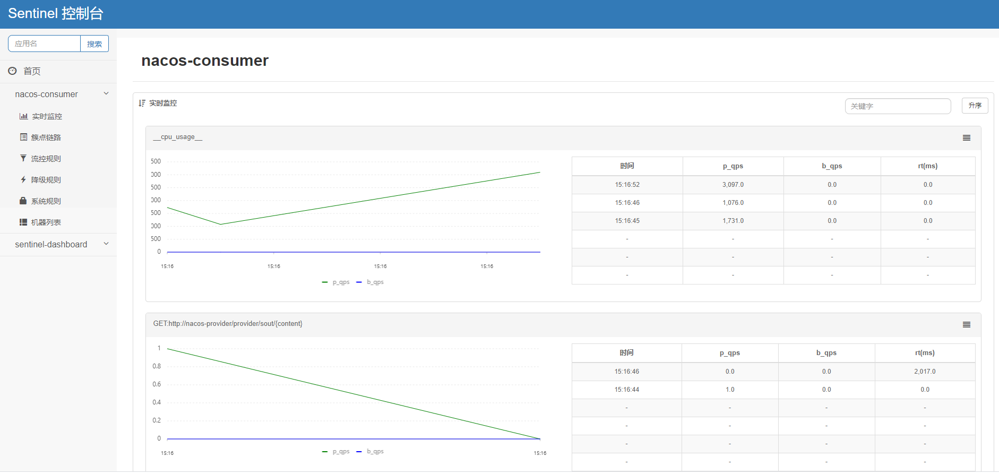
qps为每秒查询的数量
路由网关 Spring Cloud Gateway 是 Spring 官方基于 Spring 5.0，Spring Boot 2.0 和 Project Reactor 等技术开发的网关，Spring Cloud Gateway 旨在为微服务架构提供一种简单而有效的统一的 API 路由管理方式。
pom文件 1 2 3 4 5 6 7 8 9 10 11 12 13 14 15 16 17 18 19 20 21 22 23 24 25 26 27 28 29 30 31 32 33 34 35 36 37 38 <?xml version="1.0" encoding="UTF-8"?> <project xmlns ="http://maven.apache.org/POM/4.0.0" xmlns:xsi ="http://www.w3.org/2001/XMLSchema-instance" xsi:schemaLocation ="http://maven.apache.org/POM/4.0.0 http://maven.apache.org/xsd/maven-4.0.0.xsd" > <parent > <artifactId > hello-spring-cloud-alibaba</artifactId > <groupId > top.awslzhang</groupId > <version > 1.0.0-SNAPSHOT</version > </parent > <modelVersion > 4.0.0</modelVersion > <artifactId > spring-cloud-alibaba-gateway</artifactId > <dependencies > <dependency > <groupId > org.springframework.boot</groupId > <artifactId > spring-boot-starter-actuator</artifactId > </dependency > <dependency > <groupId > com.alibaba.cloud</groupId > <artifactId > spring-cloud-starter-alibaba-nacos-discovery</artifactId > </dependency > <dependency > <groupId > org.springframework.cloud</groupId > <artifactId > spring-cloud-starter-gateway</artifactId > </dependency > <dependency > <groupId > com.alibaba.cloud</groupId > <artifactId > spring-cloud-starter-alibaba-sentinel</artifactId > </dependency > <dependency > <groupId > org.springframework.cloud</groupId > <artifactId > spring-cloud-starter-openfeign</artifactId > </dependency > </dependencies > </project >
主要增加了 org.springframework.cloud:spring-cloud-starter-gateway 依赖
特别注意
Spring Cloud Gateway 不使用 Web 作为服务器，而是 使用 WebFlux 作为服务器 ，Gateway 项目已经依赖了 starter-webflux，所以这里 千万不要依赖 starter-web
由于过滤器等功能依然需要 Servlet 支持，故这里还需要依赖 javax.servlet:javax.servlet-api
Application 1 2 3 4 5 6 7 8 @SpringBootApplication @EnableDiscoveryClient @FeignClient public class SpringCloudAlibabaGatewayApplication public static void main (String[] args) SpringApplication.run(SpringCloudAlibabaGatewayApplication.class, args); } }
yml 1 2 3 4 5 6 7 8 9 10 11 12 13 14 15 16 17 18 19 20 21 22 23 24 25 26 27 28 29 30 31 32 33 34 35 36 37 38 39 40 41 42 43 44 45 46 47 48 49 50 51 52 spring: application: name: nacos-gateway cloud: sentinel: transport: port: 8719 dashboard: 127.0 .0 .1 :8080 nacos: discovery: server-addr: 127.0 .0 .1 :8848 gateway: discovery: locator: enabled: true routes: - id: NACOS-CONSUMER uri: lb://nacos-consumer predicates: - Method=GET,POST server: port: 9000 feign: sentinel: enabled: true logging: level: org.springframework.cloud.gateway: debug management: endpoints: web: exposure: include: "*"
测试 依次运行 Nacos 服务、NacosProviderApplication、NacosConsumerApplication、GatewayApplication
打开浏览器访问：http://localhost:9000/nacos-consumer/consumer/test1/lllllkkk浏览器显示
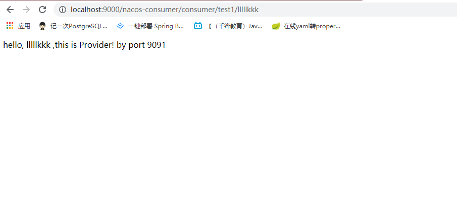
注意：请求方式是 http://路由网关IP:路由网关Port/服务名/**
至此说明 Spring Cloud Gateway 的路由功能配置成功
路由网关全局过滤功能 全局过滤器作用于所有的路由，不需要单独配置，我们可以用它来实现很多统一化处理的业务需求，比如权限认证，IP 访问限制等等。
基于上面的gateway项目修改
声明周期
Spring Cloud Gateway 基于 Project Reactor 和 WebFlux，采用响应式编程风格，打开它的 Filter 的接口 GlobalFilter 你会发现它只有一个方法 filter。
创建全局过滤器 实现 GlobalFilter, Ordered 接口并在类上增加 @Component 注解就可以使用过滤功能了，非常简单方便
1 2 3 4 5 6 7 8 9 10 11 12 13 14 15 16 17 18 19 20 21 22 23 24 25 26 27 28 29 30 31 32 33 34 35 36 37 38 39 40 41 42 43 44 45 46 47 48 49 50 51 52 53 54 55 56 57 58 59 60 import com.fasterxml.jackson.core.JsonProcessingException;import com.fasterxml.jackson.databind.ObjectMapper;import com.google.common.collect.Maps;import org.springframework.cloud.gateway.filter.GatewayFilterChain;import org.springframework.cloud.gateway.filter.GlobalFilter;import org.springframework.core.Ordered;import org.springframework.core.io.buffer.DataBuffer;import org.springframework.http.HttpStatus;import org.springframework.http.server.reactive.ServerHttpResponse;import org.springframework.stereotype.Component;import org.springframework.web.server.ServerWebExchange;import reactor.core.publisher.Mono;import java.util.Map;@Component public class AuthFilter implements GlobalFilter , Ordered @Override public Mono<Void> filter (ServerWebExchange exchange, GatewayFilterChain chain) String token = exchange.getRequest().getQueryParams().getFirst("token" ); if (token == null || token.isEmpty()) { ServerHttpResponse response = exchange.getResponse(); Map<String, Object> responseData = Maps.newHashMap(); responseData.put("code" , 401 ); responseData.put("message" , "非法请求" ); responseData.put("cause" , "Token is empty" ); try { ObjectMapper objectMapper = new ObjectMapper(); byte [] data = objectMapper.writeValueAsBytes(responseData); DataBuffer buffer = response.bufferFactory().wrap(data); response.setStatusCode(HttpStatus.UNAUTHORIZED); response.getHeaders().add("Content-Type" , "application/json;charset=UTF-8" ); return response.writeWith(Mono.just(buffer)); } catch (JsonProcessingException e) { e.printStackTrace(); } } return chain.filter(exchange); } @Override public int getOrder () return Ordered.LOWEST_PRECEDENCE; } }
测试 打开浏览器访问：http://localhost:9000/nacos-consumer/consumer/test1/lllllkkk浏览器显示
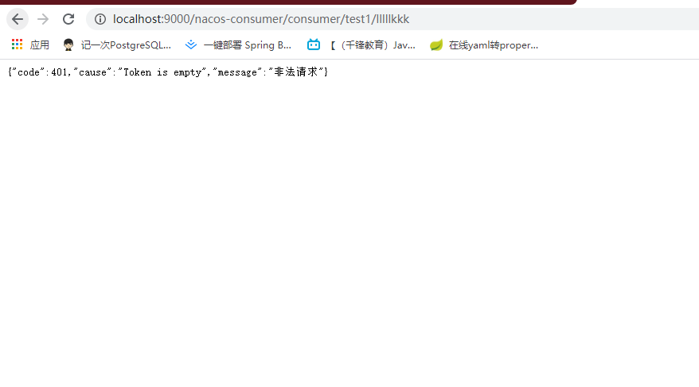
至此，成功。
更好的去做微服务 如何更好的去做微服务。
请看此篇文章
参考 Nacos官方文档
Spring Cloud Alibaba Example Github
Spring Cloud Alibaba Demo Github